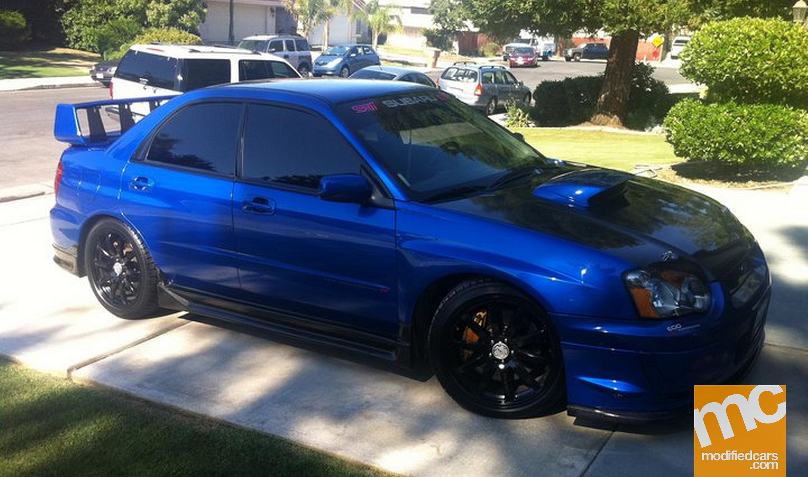

So far i have managed to create some of the following projects which you can find on git hub. Check out Favourite-Things.It was developed by html and css,just as the name suggest it was a project made in mind to show my favourite things.It is also one of the projects i started with.
Another project is Travel-Agency which was a practice project which personally i think i tried. It was made using html together with css. It was webpage about a travel agency displaying their services and information including their most popular and tropical destinations.
In total i worked on three projects which the last one you can check it here First-Webpage. It also contains html and css. IT was just a practice project so there is not much to say about it.
